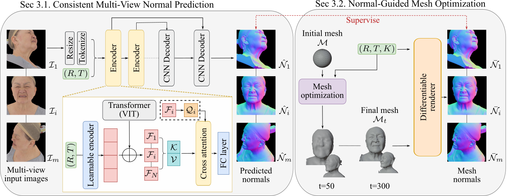
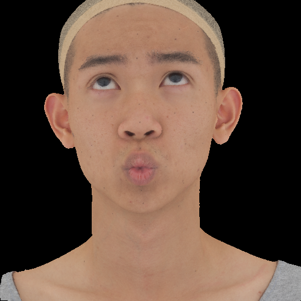
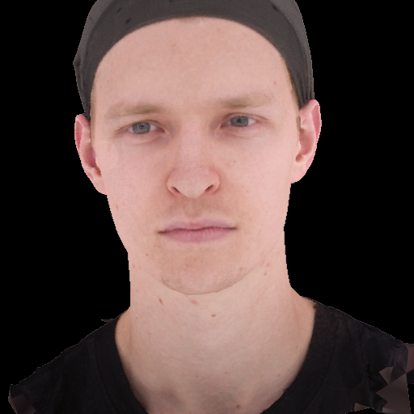
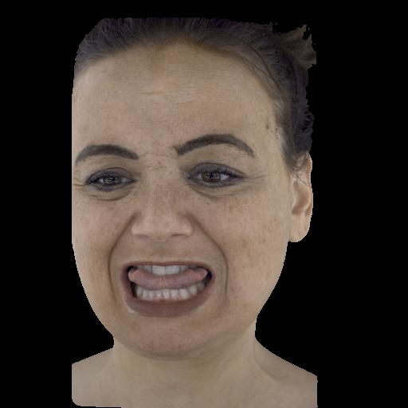
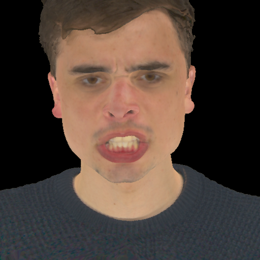
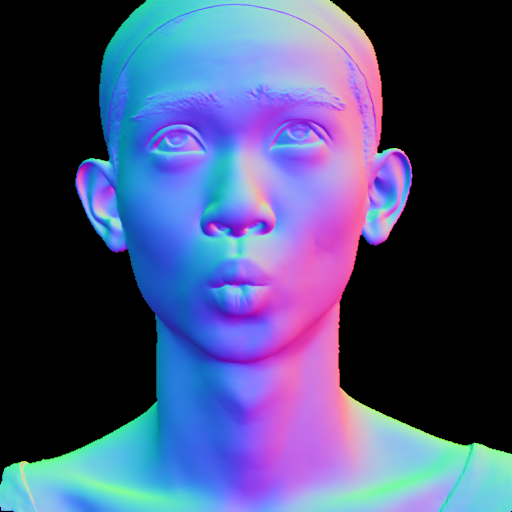
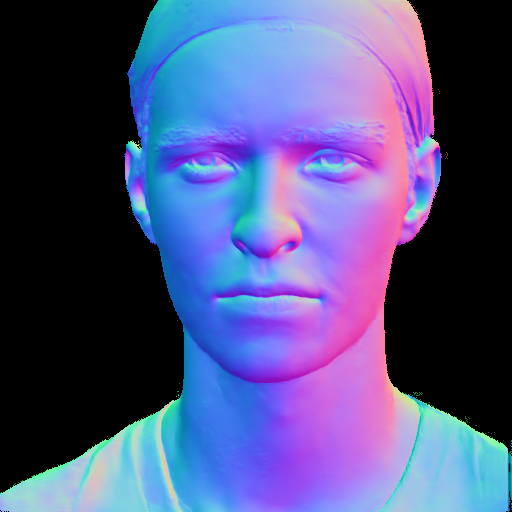
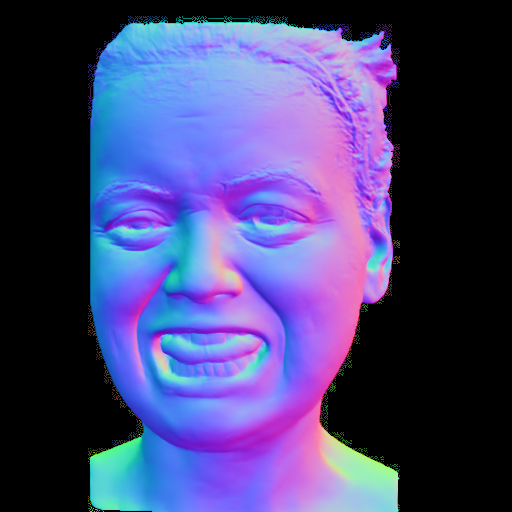
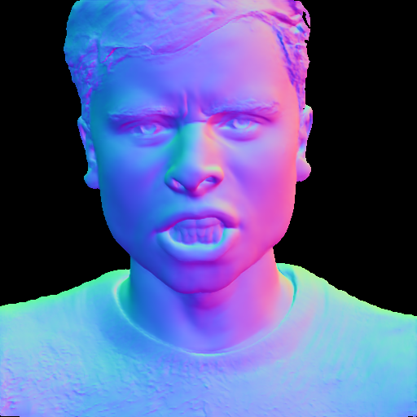
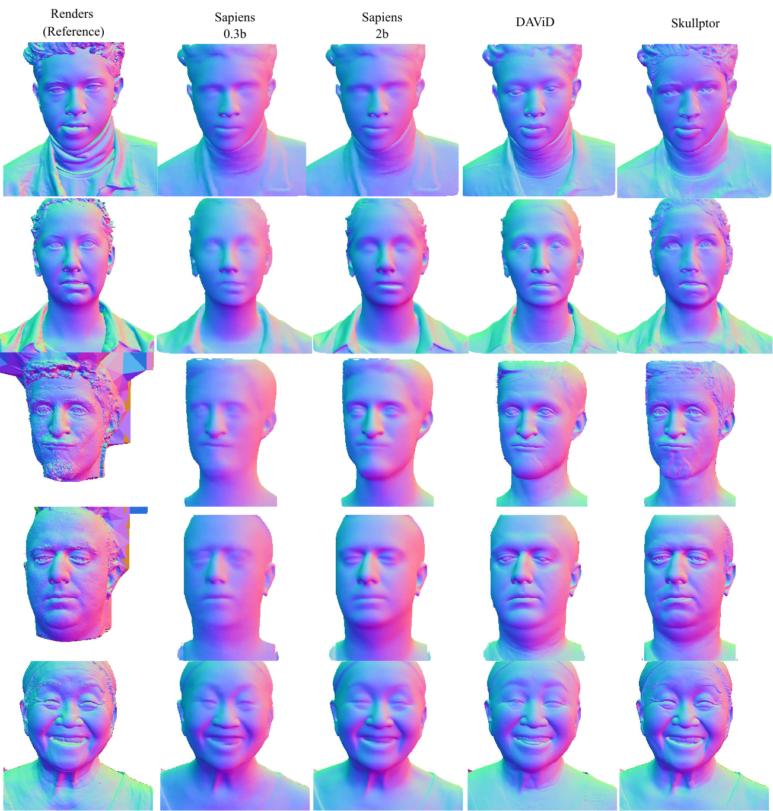
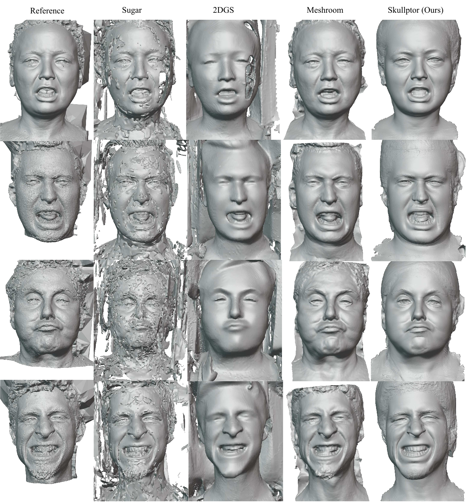
@InProceedings{artru2026skullptor,
author = {Artru, Noé and Hussain, Rukhshanda and Got, Emeline and Messier, Alexandre and Lindell, David and Dib, Abdallah},
title = {Skullptor: High Fidelity 3D Head Reconstruction in Seconds with Multi-View Normal Prediction},
booktitle = {Proceedings of the IEEE/CVF Conference on Computer Vision and Pattern Recognition (CVPR)},
year = {2026}
}